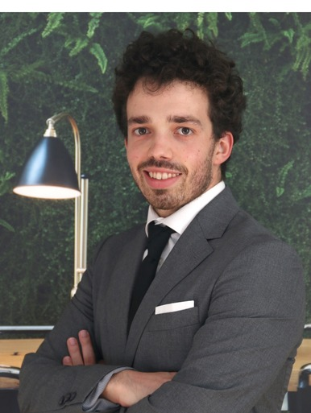

Economia,
finanças e uma
curiosidade por dados.
Sou António Faria, profissional de Economia e Finanças com passagem por Auditoria na Deloitte e gestão operacional numa empresa de padel em rápido crescimento. Atualmente a aprofundar competências em análise de dados — Excel, SQL e Power BI — aplicadas a problemas reais de negócio.

Guimarães, PTFormado em Economia pela Escola de Economia e Gestão da Universidade do Minho, estou atualmente a concluir o Mestrado em Finanças na mesma instituição. O meu percurso profissional começou na auditoria — na Deloitte Portugal — onde trabalhei com grandes volumes de dados financeiros para sustentar conclusões de auditoria e garantir conformidade regulatória.
Atualmente sou Operations Manager na Warrior Padel Arena, onde giro o dia a dia de um negócio em crescimento: orçamentação, gestão de fornecedores, planeamento de recursos e uma equipa de 15 pessoas. É um papel que me obriga a monitorizar KPIs operacionais constantemente — e foi isso que me levou a querer aprofundar as minhas competências técnicas em análise de dados, para tomar decisões mais sustentadas e comunicá-las melhor.
Fora do trabalho, o desporto sempre teve um papel central: fui atleta competitivo de ténis e polo aquático, e hoje sou treinador de padel e jogador ativo (categoria M2).
Voluntariado e associativismo
- Voluntariado internacional com a AIESEC, no âmbito dos Objetivos de Desenvolvimento Sustentável 13 e 10 das Nações Unidas (2021–2022)
- Membro da ACE — Associação de Estudantes de Economia (2021–2024)
- Campeão nacional (2ª Divisão) como Team Manager de polo aquático
Competências técnicas
Idiomas
- Programa EEG Generating Skills — competências transversais (Fev 2023)
- Formação em Power BI, 12 horas — Ace Junior Agency (Fev 2023)
- Excel for Business — Macquarie University, via Coursera (Ago 2021)
- Diversos cursos em R, Stata e Excel
- Gestão diária das operações do negócio: orçamentação, fornecedores, planeamento de recursos e coordenação operacional
- Liderança de equipa de 15 pessoas — recrutamento, escalas e avaliação de desempenho
- Coordenação de torneios, marcação de campos e experiência do cliente
- Monitorização de KPIs operacionais e análise de desempenho para apoiar decisões orientadas por dados
- Execução de procedimentos de auditoria para clientes de múltiplas indústrias
- Análise de demonstrações financeiras e avaliação de riscos financeiros e operacionais
- Trabalho com grandes conjuntos de dados financeiros para sustentar conclusões de auditoria e conformidade regulatória
Coffee Shop Sales — análise de vendas ponta a ponta
Estudo de caso completo sobre um conjunto de dados de vendas de uma cadeia de cafetarias com três localizações em Nova Iorque (Astoria, Hell's Kitchen e Lower Manhattan), cobrindo cerca de 149 mil transações entre janeiro e junho de 2023. O objetivo: replicar um fluxo de trabalho real de análise de negócio, do tratamento de dados brutos até recomendações acionáveis.
Seleção do dataset
Escolha e validação inicial dos dados de vendas de cafetaria.
Limpeza em Excel
Tratamento de inconsistências e preparação da tabela de transações.
Pivots & gráficos
Tabelas dinâmicas e visualizações para explorar padrões de venda.
Análise de negócio
Interpretação dos resultados e primeiros insights de negócio.
Replicação em SQL
Reconstrução da análise com queries para validar e escalar o processo.
Dashboard Power BI
Painel interativo para exploração visual dos indicadores-chave.
Sumário executivo
Síntese dos resultados e recomendações para o negócio.
Apresentação
Este próprio case study, preparado para portfolio.